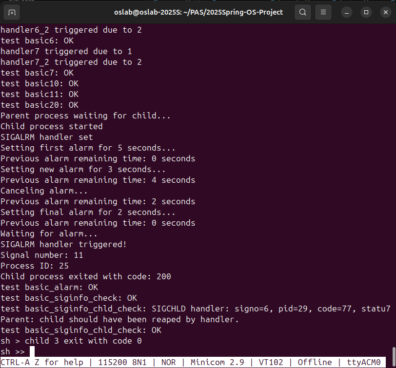

RISC-V操作系统信号处理系统实现报告
12211308 袁龙 12213021 陈泽南 12213023 何家阳
1. 项目概述
本项目实现了一个符合POSIX标准的信号处理系统，该系统运行在RISC-V架构上。信号处理系统是操作系统中进程间通信的重要机制，允许进程接收和处理异步事件。项目分为三个主要阶段（Checkpoint）完成。
2. Checkpoint 1：基础信号处理机制实现
2.1 核心数据结构(已给出)
struct ksignal {
sigaction_t sa[SIGMAX + 1]; // 信号处理方式数组
siginfo_t siginfos[SIGMAX + 1]; // 信号信息数组
sigset_t sigmask; // 掩码
sigset_t sigpending; // 待处理信号集
};
struct sigaction {
void (*sa_sigaction)(int, siginfo_t*, void *); // 信号处理函数
sigset_t sa_mask; // 处理信号时的掩码
void (*sa_restorer)(void); // 信号处理完成后的恢复函数
};
struct siginfo {
int si_signo; // 信号编号
int si_code; // 信号产生的原因
int si_pid; // 发送信号的进程ID
int si_status; // 退出状态
void* addr; // 相关的内存地址
};
2.2 信号处理基本流程
- 信号注册流程：
int sys_sigaction(int signo, const sigaction_t __user *act, sigaction_t __user *oldact) {
struct proc *p = curr_proc();
struct mm *mm = p->mm;
if (signo < SIGMIN || signo > SIGMAX)
return -1;
if (oldact != NULL) {
acquire(&mm->lock);
if (copy_to_user(mm, (uint64)oldact, (char*)&p->signal.sa[signo], sc:\Users\Lenovo\Downloads\report.pdfizeof(sigaction_t)) < 0) {
release(&mm->lock);
return -1;
}
release(&mm->lock);
}
if (act == NULL)
return 0;
if (signo == SIGKILL || signo == SIGSTOP)
return -1;
// Get the new handler
sigaction_t kact;
acquire(&mm->lock);
if (copy_from_user(mm, (char*)&kact, (uint64)act, sizeof(sigaction_t)) < 0) {
release(&mm->lock);
return -1;
}
release(&mm->lock);
p->signal.sa[signo] = kact;
return 0;
}
- 信号发送流程：
int sys_sigkill(int pid, int signo, int code) {
if (signo < SIGMIN || signo > SIGMAX)
return -1;
// Traverse the process pool to find the target process
for (int i = 0; i < NPROC; i++) {
struct proc *p = pool[i];
acquire(&p->lock);
if (p->pid == pid) {
p->signal.sigpending |= sigmask(signo);
p->signal.siginfos[signo].si_signo = signo;
p->signal.siginfos[signo].si_code = code;
p->signal.siginfos[signo].si_pid = curr_proc()->pid;
if (p->state == SLEEPING) {
p->state = RUNNABLE;
add_task(p);
}
release(&p->lock);
return 0;
}
release(&p->lock);
}
return -1; // Target process not found
}
2.3 上下文保存与恢复
- 上下文保存：
struct ucontext kcontext;
kcontext.uc_sigmask = old_mask;
kcontext.uc_mcontext.epc = tf->epc;
memmove(kcontext.uc_mcontext.regs, &tf->ra, 31 * sizeof(uint64));
- 上下文恢复：
int sys_sigreturn() {
struct proc *p = curr_proc();
struct trapframe *tf = p->trapframe;
struct ucontext kcontext;
uint64 sp = tf->sp;
// Skip the siginfo_t struct and the space reserved for arguments
sp += 16;
sp += sizeof(siginfo_t);
sp = (sp + 0xf) & ~0xf;
// Retrieve ucontext
acquire(&p->mm->lock);
int ret = copy_from_user(p->mm, (char*)&kcontext, sp, sizeof(struct ucontext));
release(&p->mm->lock);
if (ret < 0) {
return -1;
}
p->signal.sigmask = kcontext.uc_sigmask;
memmove(&tf->ra,kcontext.uc_mcontext.regs, 31 * sizeof(uint64));
return 0;
}
3. Checkpoint 2：SIGKILL特殊处理
3.1 SIGKILL的特性实现
- 不可被忽略：
if (signo == SIGKILL && sa->sa_sigaction == SIG_IGN) {
setkilled(p, -10 - SIGKILL);
return 0;
}
- 不可被阻塞：
// 在sigprocmask中确保SIGKILL不被阻塞
p->signal.sigmask &= ~sigmask(SIGKILL);
- 不可被捕获：
if (signo == SIGKILL && sa->sa_sigaction != SIG_DFL) {
setkilled(p, -10 - SIGKILL);
return 0;
}
3.2 进程终止实现(proc.c已给出)
void setkilled(struct proc *p, int reason) {
assert(reason < 0);
acquire(&p->lock);
p->killed = reason;
release(&p->lock);
}
4. Checkpoint 3: Signal across fork and exec
Fork实现如下：
int siginit_fork(struct proc *parent, struct proc *child) {
// 复制父进程的信号处理方式和信号掩码
for (int i = SIGMIN; i <= SIGMAX; i++) {
child->signal.sa[i] = parent->signal.sa[i];
}
// 继承父进程的信号掩码
child->signal.sigmask = parent->signal.sigmask;
// 清空所有pending信号
child->signal.sigpending = 0;
memset(child->signal.siginfos, 0, sizeof(child->signal.siginfos));
return 0;
}
在fork 时，子进程继承父进程的signal处理方式(sigaction)、signal mask，并且清空所有 pending signal。
Exec实现如下：
int siginit_exec(struct proc *p) {
// 保存当前的信号掩码和pending信号
sigset_t old_mask = p->signal.sigmask;
sigset_t old_pending = p->signal.sigpending;
siginfo_t old_infos[SIGMAX + 1];
memmove(old_infos, p->signal.siginfos, sizeof(old_infos));
// 重置所有信号处理方式为默认，除了被忽略的信号
for (int i = SIGMIN; i <= SIGMAX; i++) {
if (p->signal.sa[i].sa_sigaction != SIG_IGN) {
p->signal.sa[i].sa_sigaction = SIG_DFL;
p->signal.sa[i].sa_mask = 0;
p->signal.sa[i].sa_restorer = NULL;
}
}
// 恢复信号掩码和pending信号
p->signal.sigmask = old_mask;
p->signal.sigpending = old_pending;
memmove(p->signal.siginfos, old_infos, sizeof(old_infos));
return 0;
}
在exec 时，子进程重置所有的signal处理方式为默认值，并且保留被手动指定为ignore的那些sigaction，signal mask 以及 pending signal 不变。
Basic check123 结果如下：

5.自选Checkpoint:
5.1.1 SIGALARM
参考：alarm(2)。需要设计一个系统调用，它能设置一个时钟，在n秒后向用户进程发起一次信号SIGALRM。
unsigned int alarm(unsigned int seconds);
- alarm() 在指定的秒数后向调用进程发送SIGALRM信号
- 如果seconds为0，则取消任何待处理的alarm
- alarm() 返回之前设置的alarm的剩余秒数，如果没有之前设置的alarm则返回0
5.1.2保存时钟状态的数据结构
struct {
struct spinlock lock;
uint64 alarm_time; // 以CPU周期为单位的alarm时间
} alarm_state;
- 使用自旋锁保护对
alarm_time的访问 alarm_time以CPU周期为单位存储时间
5.1.3 alarm系统调用
unsigned int alarm(unsigned int seconds) {
struct proc *p = curr_proc();
uint64 current_time = r_time();
unsigned int remaining = 0;
acquire(&alarm_state.lock);
// 如果seconds为0，取消现有的alarm
if (seconds == 0) {
if (alarm_state.alarm_time > current_time) {
remaining = (alarm_state.alarm_time - current_time) / CPU_FREQ;
}
alarm_state.alarm_time = 0;
} else {
// 计算新的alarm时间
uint64 new_alarm_time = current_time + seconds * CPU_FREQ;
// 如果已有alarm，计算剩余时间
if (alarm_state.alarm_time > current_time) {
remaining = (alarm_state.alarm_time - current_time) / CPU_FREQ;
}
// 设置新的alarm时间
alarm_state.alarm_time = new_alarm_time;
}
release(&alarm_state.lock);
return remaining;
}
5.1.4 定时器检查函数
void check_alarm(void) {
struct proc *p = curr_proc();
if (p == NULL) {
return; // 如果没有当前进程，直接返回
}
uint64 current_time = r_time();
acquire(&alarm_state.lock);
if (alarm_state.alarm_time > 0 && current_time >= alarm_state.alarm_time) {
// 发送SIGALRM信号
acquire(&p->lock);
p->signal.sigpending |= sigmask(SIGALRM);
p->signal.siginfos[SIGALRM].si_signo = SIGALRM;
p->signal.siginfos[SIGALRM].si_pid = p->pid;
release(&p->lock);
// 清除alarm时间
alarm_state.alarm_time = 0;
}
release(&alarm_state.lock);
}
5.1.5 测试验证
-
基本功能测试（对应Checkpoint要求：在指定秒数后发送SIGALRM信号）
- 设置5秒alarm
- 验证返回值为0（之前没有alarm）
- 验证信号在正确时间发送
-
取消alarm测试（对应Checkpoint要求：如果seconds为0，取消任何待处理的alarm）
- 等待1秒后设置新alarm
- 验证返回剩余时间
- 取消alarm并验证返回剩余时间
- 验证alarm确实被取消（不会触发信号）
实现：
// alarm信号处理函数
void handler_alarm(int signo, siginfo_t* info, void* ctx) {
assert(signo == SIGALRM);
assert(info->si_signo == SIGALRM);
assert(info->si_pid == getpid());
fprintf(1, "SIGALRM handler triggered!\n");
fprintf(1, "Signal number: %d\n", signo);
fprintf(1, "Process ID: %d\n", info->si_pid);
exit(200);
}
// 测试alarm系统调用
void basic_alarm(char* s) {
int pid = fork();
if (pid == 0) {
fprintf(1, "Child process started\n");
sigaction_t sa = {
.sa_sigaction = handler_alarm,
.sa_restorer = sigreturn,
};
sigemptyset(&sa.sa_mask);
sigaction(SIGALRM, &sa, 0);
fprintf(1, "SIGALRM handler set\n");
fprintf(1, "Setting first alarm for 5 seconds...\n");
unsigned int remaining = alarm(5);
fprintf(1, "Previous alarm remaining time: %d seconds\n", remaining);
assert_eq(remaining, 0);
sleep(1);
fprintf(1, "Setting new alarm for 3 seconds...\n");
remaining = alarm(3);
fprintf(1, "Previous alarm remaining time: %d seconds\n", remaining);
assert(remaining > 0);
sleep(1);
fprintf(1, "Canceling alarm...\n");
remaining = alarm(0);
fprintf(1, "Previous alarm remaining time: %d seconds\n", remaining);
assert(remaining > 0);
fprintf(1, "Setting final alarm for 2 seconds...\n");
remaining = alarm(2);
fprintf(1, "Previous alarm remaining time: %d seconds\n", remaining);
assert_eq(remaining, 0);
fprintf(1, "Waiting for alarm...\n");
while(1);
exit(1);
} else {
fprintf(1, "Parent process waiting for child...\n");
int ret;
wait(0, &ret);
fprintf(1, "Child process exited with code: %d\n", ret);
assert_eq(ret, 200); // 信号处理函数应该返回200
}
}
5.2 Checkpoint- siginfo
在每次进入 userspace signal handler 前，即在do_signal中在用户栈上构造siginfo结构体，并将它传给用户模式sigactionhandler
int do_signal(void) {
...
siginfo_t *kinfo = &p->signal.siginfos[signo];
kinfo->si_signo = signo;
// 如果 si_pid 已由 sys_sigkill 设置则保持，否则置为 -1（内核触发）
kinfo->si_pid = (kinfo->si_pid != 0 ? kinfo->si_pid : -1);
if(kinfo->si_signo != SIGCHLD){
kinfo->si_code = 0;
kinfo->si_status = 0;
}
kinfo->addr = NULL;
printf("do_signal: signo=%d, pid=%d, code=%d, status=%d\n",
signo,
kinfo->si_pid,
kinfo->si_code,
kinfo->si_status);
// 为siginfo预留空间
sp -= sizeof(siginfo_t);
sp &= ~0xf; // 16字节对齐
uint64 siginfo_addr = sp;
...
copy_to_user(mm, siginfo_addr, (char*)kinfo, sizeof(siginfo_t))
}
对该checkpoint的basic test如下：
由于我们在自选checkpoint中未实现由内核发送的signal信号，因此这里仅测试由进程发送的signal， sigkill(pid, SIGUSR1, 2);
// 验证 siginfo_t 结构体的各字段：
// si_signo 应是 SIGUSR1
// si_pid 应是发送者（parent）的 pid
// si_code 应为 0
// si_status 应为 0
// addr 应为 NULL
void siginfo_handler(int signo, siginfo_t *info, void *ctx) {
printf("Check signo=%d, pid=%d, code=%d, status=%d\n", info->si_signo, info->si_pid, info->si_code, info->si_status);
// 检查信号编号
assert(signo == SIGUSR1);
// 检查 si_signo
assert(info->si_signo == SIGUSR1);
// 检查 si_pid（父进程发送）
int ppid = getppid();
assert(info->si_pid == ppid);
// 检查其他字段
assert(info->si_code == 0);
assert(info->si_status == 0);
assert(info->addr == NULL);
// 如果都通过，则退出并返回特定码
exit(123);
}
void basic_siginfo_check(char *s) {
// 在子进程安装 handler
int pid = fork();
if (pid == 0) {
sigaction_t sa = {
.sa_sigaction = siginfo_handler,
.sa_restorer = sigreturn,
};
sigemptyset(&sa.sa_mask);
sigaction(SIGUSR1, &sa, NULL);
// 等待信号
while (1) sleep(1);
} else {
// 父进程稍等，让子进程安装好 handler
sleep(5);
// 由父进程发送 SIGUSR1
sigkill(pid, SIGUSR1, 2);
// 等待子进程退出并检查它的 exit code
int status;
wait(0, &status);
// 我们在 handler 里用 exit(123)，因此这里应该收到 123
assert_eq(status, 123);
}
}
5.3 SIGCHLD
在这个Checkpoint中，我们在进程的exit函数中增加了向其父进程传递SIGCHLD信号的逻辑，并在do_signal函数中进行相应的操作，最后设计了一个testcases来实现handler函数对信号的自动处理功能。相应代码如下：
- exit函数发出SIGCHLD信号
if (parent) {
acquire(&parent->lock);
parent->signal.sigpending |= sigmask(SIGCHLD);
parent->signal.siginfos[SIGCHLD].si_signo = SIGCHLD;
parent->signal.siginfos[SIGCHLD].si_pid = p->pid;
parent->signal.siginfos[SIGCHLD].si_code = code; // 退出码
parent->signal.siginfos[SIGCHLD].si_status = 0;
parent->signal.siginfos[SIGCHLD].addr = NULL;
release(&parent->lock);
}
- do_signal中对SIGCHLD保留siginfo中的数据：
if(kinfo->si_signo != SIGCHLD){
kinfo->si_code = 0;
kinfo->si_status = 0;
}
- testcase中handler的实现：
void siginfo_chld_handler(int signo, siginfo_t *info, void *ctx) {
assert(signo == SIGCHLD);
assert(info->si_signo == SIGCHLD);
assert(info->si_pid > 0); // 子进程 pid
int status;
int ret = wait(info->si_pid, &status);
assert(ret == info->si_pid); // 回收的就是发送信号的子进程
assert(info->si_code == 77); // 你的实现：退出码放在 si_code
printf("SIGCHLD handler: signo=%d, pid=%d, code=%d, status=%d\n",
info->si_signo, info->si_pid, info->si_code, status);
}
void basic_siginfo_chld_check(char *s) {
int pid = fork();
if (pid == 0) {
exit(77);
} else {
sigaction_t sa = {
.sa_sigaction = siginfo_chld_handler,
.sa_restorer = sigreturn,
};
sigemptyset(&sa.sa_mask);
sigaction(SIGCHLD, &sa, NULL);
sleep(5);
printf("Parent: child should have been reaped by handler.\n");
}
}
5.4 自选Checkpoints 结果（解释和实现如上）：
